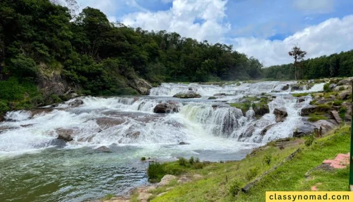
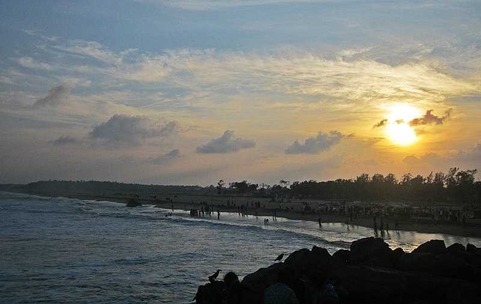
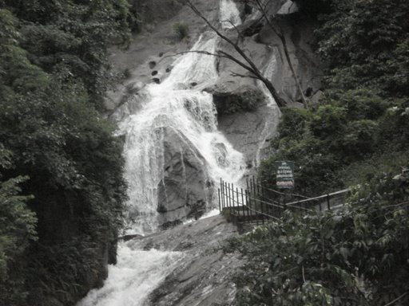
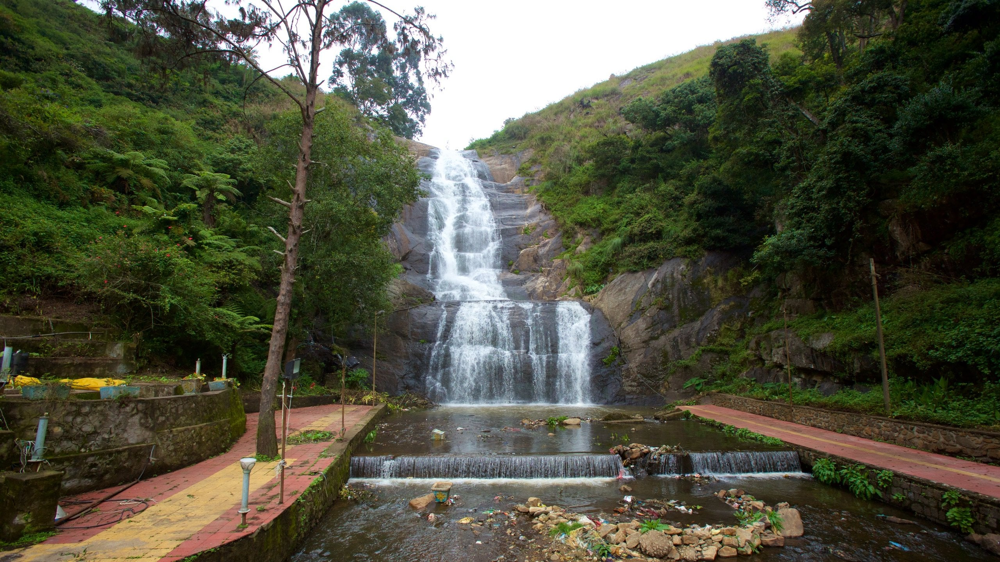
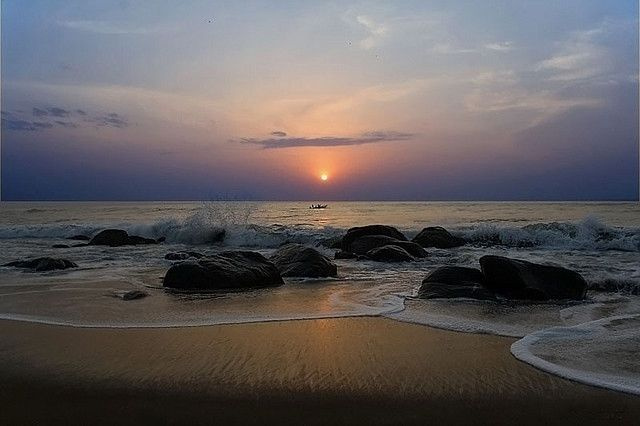
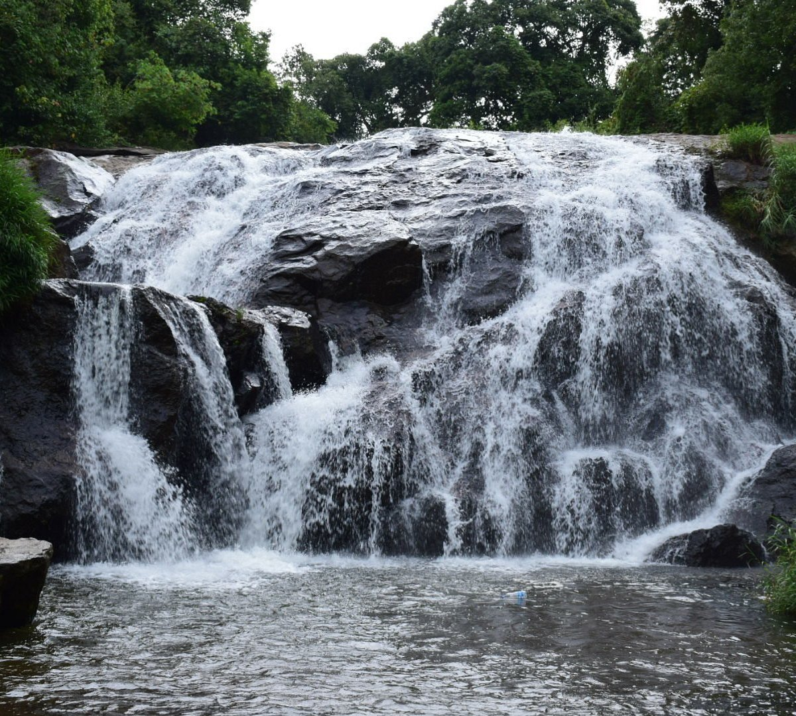
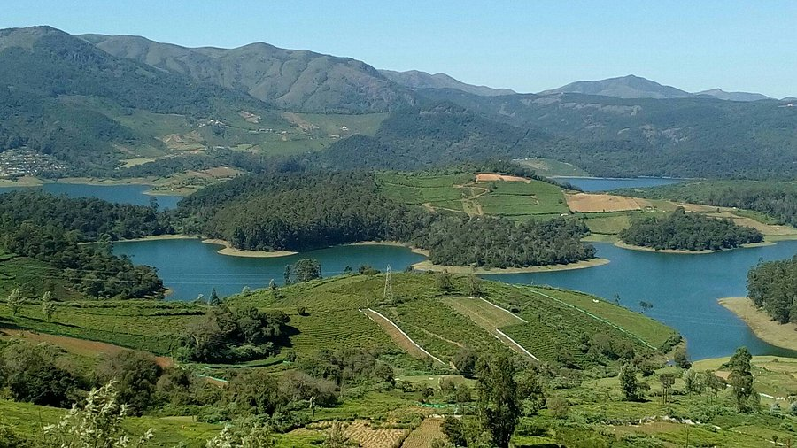
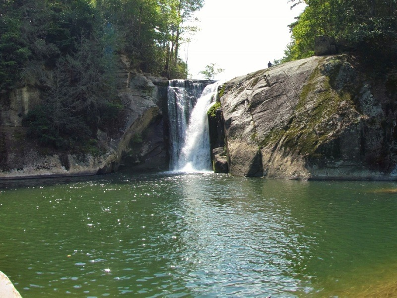
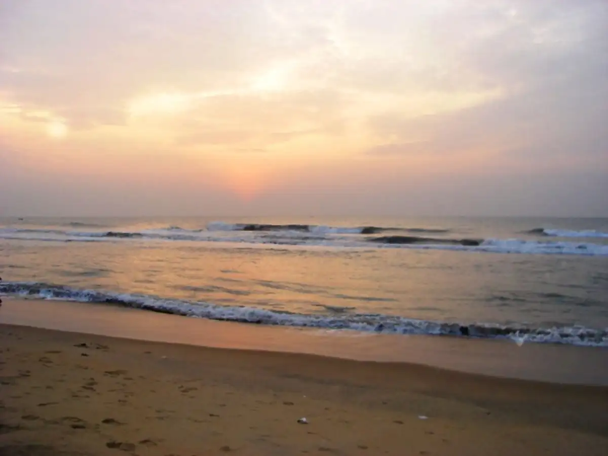
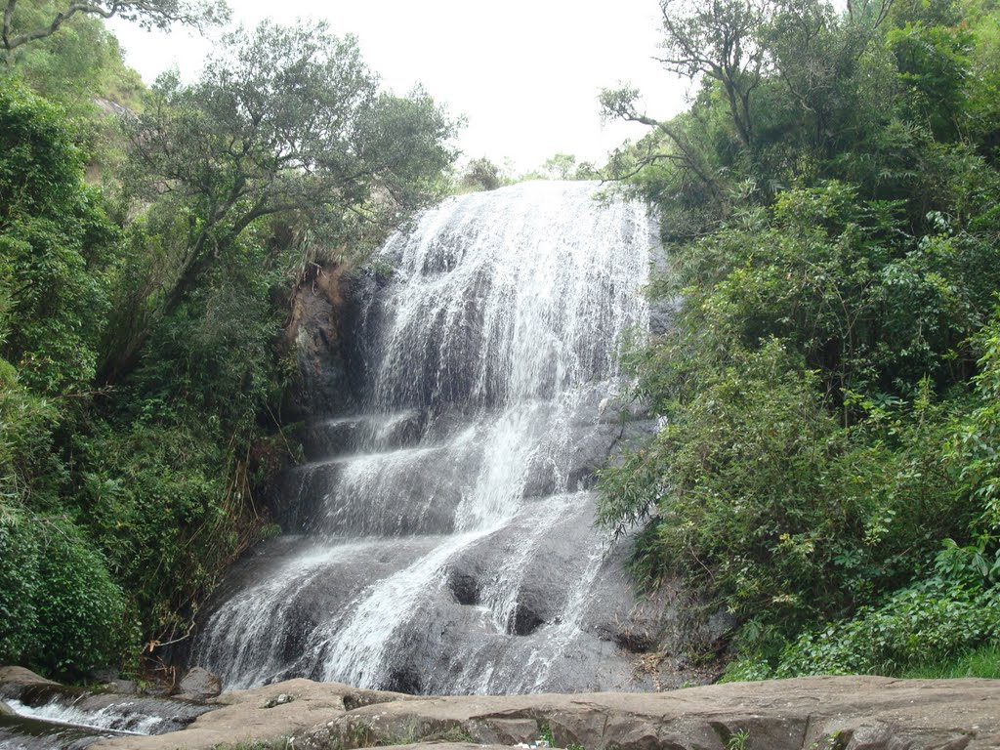

Pykara Falls, located in Ooty, Tamil Nadu, is a popular tourist destination known for its
scenic
beauty and cascading
waterfalls.
1. Cascading Waterfalls:
Pykara Falls is formed by the Pykara River as it descends in a series of cascades, with the
last two
falls being the
most prominent.
2. Sacred River:
The Pykara River is considered sacred by the Toda tribe, adding cultural significance to the area.
3. Hydroelectric Project:
The river also plays a role in an important hydroelectric power project, with a dam and
power
station located
nearby.
4. Boating:
Pykara Lake, formed by the dam, offers boating activities, making it a popular spot for recreation.
5. Picturesque Setting:
The falls and surrounding landscape, including the vast grassy meadows of Wenlock Downs,
provide a
scenic backdrop for
photography and picnics.
6. Tourist Attraction:
Pykara Falls is a well-known tourist spot, attracting visitors with its natural beauty
and
recreational
opportunities.

Sadras Beach, near Mahabalipuram in Tamil Nadu, is known for its serene ambiance, historical fort, and
Dutch cemetery,
offering a tranquil escape with a touch of history. It's a picturesque location with casuarina groves,
colorful fishing
boats, and opportunities for relaxation and exploration.
1. Historical Significance:
Sadras Beach is home to a well-preserved Dutch fort and cemetery, remnants of the Dutch East India
Company's presence in
the area.
2. Secluded and Tranquil:
The beach is known for its peaceful atmosphere, offering a quieter alternative to more crowded
beaches.
3. Scenic Beauty:
Sadras Beach is surrounded by casuarina groves, providing shade and a picturesque backdrop for
relaxation and
photography.
4. Dutch Cemetery:
The Dutch cemetery features tombstones with inscriptions dating back to the 17th and 18th centuries,
offering a glimpse
into the past.
5. Proximity to Mahabalipuram:
Sadras is located near Mahabalipuram, a UNESCO World Heritage Site known for its ancient temples and
rock-cut
sculptures, making it an easy addition to a historical or cultural itinerary.

Siruvani Waterfalls, located 36 km west of Coimbatore, is famous for its sweet water and
scenic
beauty. It's a popular
destination for nature lovers, offering trekking, picnicking, and
birdwatching opportunities. The
falls are accessible
via a 1 km trek through the forest after
a drive through the Sadivayal Checkpost.
1. Sweet Water:
The water of Siruvani is renowned for its unique, sweet taste, attributed to its low mineral
content and high oxygen
levels.
2. Scenic Beauty:
The waterfall is nestled amidst the lush greenery of the Western Ghats, offering breathtaking
views
and a tranquil
environment.
3. Accessibility:
The main access point is through the Sadivayal Checkpost, where an entry fee is charged. Private
vehicles are not
permitted beyond this point, and visitors need to use forest department vehicles
to reach the
trekking point.
4. Trekking and Activities:
A 1 km trek through the forest is required to reach the bathing spot at the falls.
Popular
activities include trekking,
nature walks, bird watching, and picnicking.
5. Best Time to Visit:
The ideal time to visit is after the monsoon season when the waterfall is at its fullest
and the
surroundings are
vibrant.

Silver Cascade Falls in Kodaikanal is a popular tourist spot known for its picturesque, cascading
waterfall and the
surrounding natural beauty. It's an ideal location for a short break during a trip, offering scenic
views and
opportunities to enjoy local snacks and refreshments.
1. Artificial Waterfall:
The falls are formed from the excess water of the man-made Kodaikanal Lake, making them an artificial
cascade.
2. Scenic Location:
Situated on the way to Kodaikanal from Madurai, it's a convenient stop for travelers and offers a
refreshing break.
3. Photogenic Spot:
The waterfall's silvery appearance, especially when viewed during the rainy season, makes it a popular
spot for
photography.
4. Refreshment Stalls:
Numerous street food vendors and shops are located near the falls, offering snacks like roasted corn,
fresh coconut
water, and local jewelry.
5. Proximity to Other Attractions:
It's located near other popular Kodaikanal attractions, such as Kodaikanal Lake, Coaker's Walk, and
Bryant Park.

Covelong Beach, also known as Kovalam Beach, is a popular destination in Tamil Nadu,
India, known
for its beautiful
coastline, water sports, and historical significance. It's located
40km from Chennai and is a
charming fishing village
with a vibrant atmosphere.
1. Location:
Situated on the Coromandel Coast along the Bay of Bengal, Covelong Beach is a coastal
suburb and
fishing village.
2. History:
Covelong was once a port town established by the Nawab of Carnatic and later developed by
the Dutch
who built a
fort.
3. Activities:
The beach is a hub for water sports like windsurfing, kayaking, and canoeing, with a dedicated
surfing school.
4. Historical Significance:
Remains of the Dutch fort and an ancient Catholic Church are notable historical landmarks
near the
beach.
5. Fishing Village:
The adjacent village of Covelong is a fishing village, and the local fishermen are often
willing to
take visitors on
fishing trips.

Catherine Falls, located near Kotagiri in Tamil Nadu, is a double-cascaded waterfall known for its
scenic beauty and
trekking opportunities. It's a popular spot for tourists visiting the Ooty-Coonoor area. The falls are
surrounded by
lush greenery, tea plantations, and the Nilgiri forests.
1. Double Cascades:
Catherine Falls is a two-tiered waterfall, with the upper falls being fed by the Kallar River.
2. Location and Accessibility:
Situated on the Mettupalayam Road, branching off at Aravenu, it's accessible from Kotagiri. The falls
can be viewed from
Dolphin's Nose, a nearby viewpoint.
3. Trekking Opportunities:
Catherine Falls offers trekking routes through the forest, including a popular trek from Aravenu and a
longer trek
through Longwood Shola Forest (with permission).
4. Surrounding Scenery:
The falls are surrounded by picturesque Nilgiri forests, tea plantations, and offer views of the
Mettupalayam
plains.
5. Named After a Planter's Wife:
The waterfall is named after Catherine, the wife of M.D. Cockburn, a Scottish planter who introduced
coffee and other
crops to the region.

Emerald Lake is known for its stunning emerald green waters and is a popular destination for
nature
lovers,
photographers, and birdwatchers. It's surrounded by lush green hills and tea
gardens, offering a
tranquil escape. The
lake is part of the Kundah Hydro Power Project and
is a significant part of the local ecosystem.
1. Scenic Beauty:
The lake's most striking feature is its vibrant emerald green water, reflecting the surrounding
hills and sky. This
creates a picturesque and serene environment.
2. Biodiversity:
Emerald Lake is rich in flora and fauna, making it a great spot for nature enthusiasts.
Birdwatchers
can observe various
bird species, including migratory birds.
3. Trekking and Photography:
The surrounding hills offer trekking trails for all levels, providing panoramic views of the
lake
and its surroundings.
The landscape also provides ample opportunities for photography,
especially at sunrise and
sunset.
4. Tea Gardens:
Emerald Lake is surrounded by tea plantations, offering visitors a chance to explore the
tea
gardens, learn about tea
processing, and enjoy a fresh cup of tea.
5. Tranquility and Relaxation:
Emerald Lake is a peaceful destination where visitors can relax, enjoy the natural beauty,
and
escape the hustle and
bustle of city life.

Elk Falls, near Kotagiri in Tamil Nadu, is a scenic waterfall known for its beauty and historical
connection to the
British colonial era. It's a popular spot for tourists, offering views of the Kookal Valley and
surrounding tea and
coffee plantations.
1. Tourist Destination:
Elk Falls is a popular tourist destination, attracting visitors with its natural beauty and historical
charm.
2. Waterfall:
It's a picturesque waterfall, known for its gushing water, especially during the monsoon season.
3. Kookal Valley:
The falls offer a view of the Kookal Valley, known for its orange cultivation, which is particularly
vibrant during the
monsoon.
4. British Influence:
A European house, built during the British colonial period (likely by British collector Sullivan), is
located near the
falls, adding to its historical significance.
5. Best Time to Visit:
The monsoon season (June to September) is considered the best time to visit, as the waterfall is in full
flow and the
Kookal Valley is at its most scenic.
6. Nearby Attractions:
Other attractions in the vicinity include Catherine Falls, Kodanad View Point, Rangaswamy Peak and
Pillar, and the John
Sullivan Memorial.

Elliot's Beach, also known as Besant Nagar Beach, is a popular Chennai beach known for
its
cleanliness, tranquility, and
proximity to various attractions. It's a great spot for relaxation,
strolling, and enjoying the sea.
Key features
include the Karl Schmidt Memorial and nearby
temples like Ashtalakshmi Temple and Velankanni Church.
1. Cleanliness and Tranquility:
Compared to Marina Beach, Elliot's Beach is generally considered cleaner and less crowded,
offering
a more peaceful
atmosphere for visitors.
2. Prominent Landmarks:
The beach is home to the Karl Schmidt Memorial, a monument honoring a Dutch sailor
who died saving a
person from
drowning. The nearby Ashtalakshmi Temple and Velankanni
Church also add to the area's appeal.
3. Variety of Activities:
Visitors can enjoy leisurely walks on the sand, relax by the sea, or partake in activities
like
horse riding and
enjoying refreshments from nearby stalls and cafes.
4. Accessibility and Parking:
Elliot's Beach is easily accessible by road and has parking facilities available for
those traveling
by car.
5. Popular with Locals and Tourists:
The beach is a popular destination for both locals and tourists, offering a relaxing seaside
experience with
opportunities to enjoy the beach, food, and nearby religious and cultural sites.

Bear Shola Falls, a serene and picturesque waterfall near Kodaikanal, is known for its tranquil setting
amidst lush
forests and its name, which originates from the bears that used to frequent the area.
1. Seasonal Attraction:
Bear Shola Falls is a seasonal waterfall, meaning it's most impressive during the monsoon season,
typically from
September to December, when the water flow is at its peak.
2. Tranquil Environment:
The falls are nestled within dense forests, offering a peaceful and serene atmosphere, ideal for
relaxation and enjoying
nature's sounds, like the chirping of birds.
3. Biodiversity Hotspot:
The surrounding forests are rich in biodiversity, making it a great spot for nature lovers to observe
various plant and
animal species.
4. Historical Significance:
The falls are named "Bear Shola" because bears used to visit the area to drink water, adding to the
falls' unique
charm.
5. Accessibility:
Bear Shola Falls is easily accessible, located just a few kilometers from Kodaikanal Lake and the bus
station, making it
a convenient addition to any Kodaikanal itinerary.